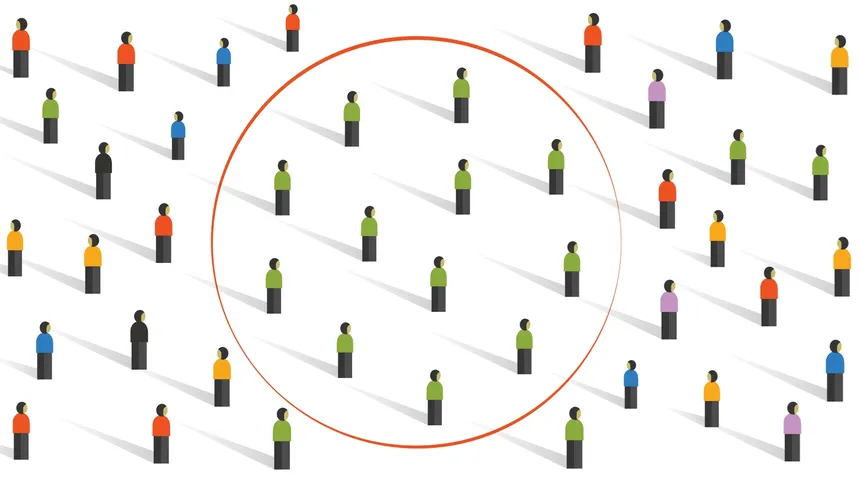
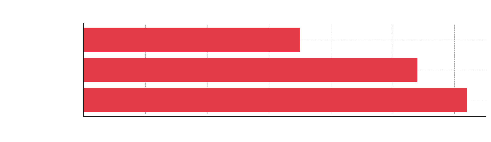

INFLUENCE
Shaping Perspectives
Show more
These creators often mix personal opinions with selective facts, which can influence how viewers interpret events or individuals.
Because they speak directly to the audience in a casual and relatable tone, their points often feel more trustworthy than traditional media sources. Over time, regular viewers may adopt the creator’s stance on issues without realizing how much their views have been shaped.

Polarization and Echo Chamber
Show more
The algorithm-driven nature of YouTube’s content recommendations can lead to echo chambers, where users are mostly shown content that supports their existing beliefs. As viewers engage with videos that align with their opinions, the platform continues suggesting similar content, reducing exposure to opposing viewpoints.
This cycle can intensify beliefs, make people less open to different perspectives, and increase political or cultural polarization online.
Commentary channels play a role in this process when they repeatedly reinforce a particular stance or ideology.
Trust in Information Sources
